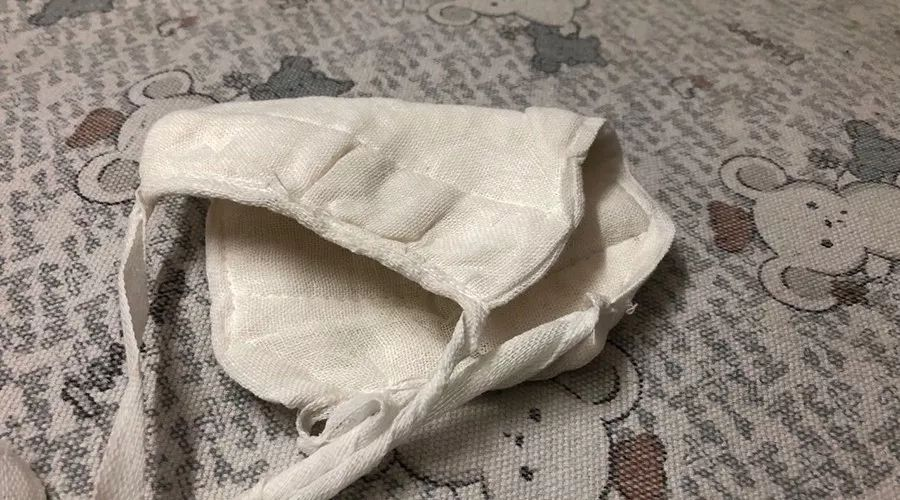
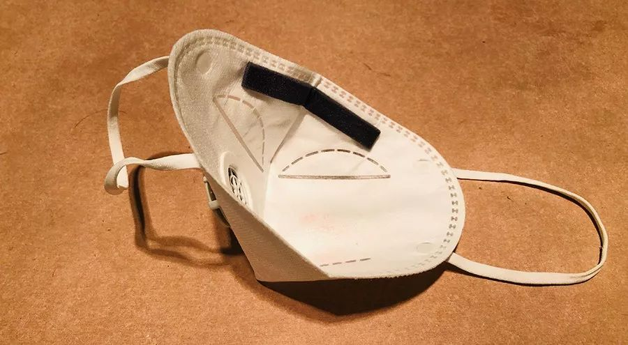
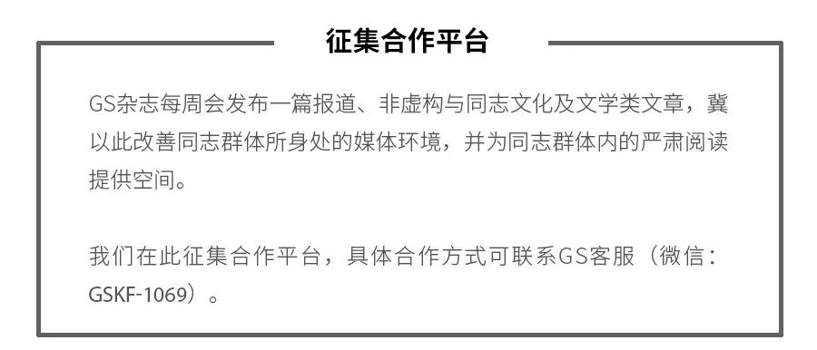

叶青疫区日记：陈一新副组长来了
原文链接 备份链接 非常时期，武汉成了全国人民挂念、祈福的城市。封城后，武汉人民的真实生活是什么样？ 正和岛自1月26日起特别推出《叶青：我在武汉疫区的第N天》专栏。叶青是一位定居武汉40年的市民，也是一名学者和官员。接下来的一段时间， …

采访、撰文 | 赵力
封 | 母亲反复清洗的棉质口罩
投稿邮箱 | gayspot_edit@163.com
1月31日，早上五点多，武力就醒了。他能听见隔壁母亲起床窸窸窣窣的声音。
他知道七点一过，父亲会是这个家里第一个出门的。他要骑自行车到县里去。父亲本来是不在县里的卫生部门工作的，但这一次新型冠状病毒引发的肺炎疫情来势汹汹，从1月26日起，父亲就和卫生部门的同事一起，每天都要出门检查，看哪个商户不按照要求还在偷偷营业，有没有人不戴口罩就出门。“不能害己害人撒！”父亲最爱说的这句话有了用途。
在差不多九点钟的时候，母亲也会出门。母亲本来是没有工作的，父亲托关系给她在县里找了一份劳务派遣的工作，但因为疫情的缘故，母亲暂时不能去上班了。母亲这个人闲不住，又高又瘦的母亲不仅干活是一把好手，现在又和村里几个同样在县里劳务派遣的男女组成了纠察队，每天在村里来回走四五趟。
“我要出门了，饭在锅里，你自己热了吃，”母亲一边戴口罩出门一边提高了嗓门对二楼的武力说，“我今天应该回来得早一些，昨天被我们抓住的打麻将的那两家，今天应该不敢打了。”
从武汉回来
1月23日，武汉封城的消息传来时，武力还没有那么紧张。反倒是随后的孝感封城，让武家四口人都有些慌了。武家生活在孝感市市属管辖的一个村落。平时过年，村落里老人笑小孩叫的最是热闹。这两天村子里的人还都是张家长李家短地来回串门。一天后，村委会发布了禁止随意出入的消息，并开始安排村委会的党员在仅有的两个出入口处值班。“那些往农地里走的小岔路，我们是管不了的。”母亲说。
“你不要说是你从武汉回来了，”武力的父亲那天回家后叮嘱武力，“这事很严重。”
“怎么了？”和姐姐武春做饭的母亲听到了父亲的话，感觉他的表情十分凝重。
“这一次的事情就是很严重。我不想让别人用有色眼镜看我们。你只要不出去说你从武汉回来就好。”父亲用手敲了敲饭桌。
武力一直低着头，装作刷手机的样子，不敢抬头看父亲。如果父亲知道，他是和自己的男朋友去武汉玩了四天，大概会把自己的皮扒了。自己从初中开始就喜欢同性，成为他内心里压迫自己的一块巨石。此时，又多了一个武汉。
那天晚上，武力回到自己的房间和男朋友视频，“这一次的疫情很吓人的。你有没有什么迹象？”男友没有，但他明显害怕了，“我们分开几天了？”武力算了一下，“三天了。”男朋友心烦意乱，“我先挂了。”
武力也跟着烦了起来。这两个还在读大学三年级的男生去了很多繁华的地方，黄鹤楼、汉口商业区、武汉大学、飞机场、火车站……他一边翻看一边回忆这几天的路程，到最后甚至想把手机里拍的照片都删掉。
武力的胡思乱想被姐姐武春的哭声打断了。“为什么让我回去？”姐姐大声地问。“你小点声，”母亲的语气里有一丝哀求和不忍，“这是为了我们一家好！”“是为了你们三个人好！”姐姐的嗓子因为哽咽有些嘶哑。
武春的个子矮小，不像父母和武力的个子都很高。因为武春从小就营养不良。尤其是武家超生了弟弟武力之后，她就被送到了奶奶家，吃得更差，身体也更不好，每一次流感都能狠狠地抓住她。就算这样，父母还是都把好吃的好用的给了武力，还教育武春要好好照顾弟弟。
武力一直觉得自己对不起武春，为了逃避，甚至读大学都没有留在省内，而是跑到了北方。但武春没有读大学，高中毕业后就在父母的要求下去工作了，甚至每到过年都会给武力一笔压岁钱。“连我爸妈都不给我压岁钱，但是我姐给我。”武力一想到这，鼻子又酸了。他很爱哭。
1月24日，早上六点，武力猛地醒了。一扭头，看到枕头边放着一个红包，里面是三千块钱。武力立刻明白了什么，披着羽绒服，光着腿，跑到姐姐的卧室里。果然，里面没有人。
“我姐呢？”武力跑到父母的卧室，发现也没人。整个家里只有自己！武力这才慌了。急忙打电话给武春。响了几声之后，武春接了电话，在吵杂的声音中，她说，“弟弟，姐姐今年不在家过年了。爸妈送我来火车站。”“你去哪里？”武力下意识地问。“回厂里。”武春哽咽了，“你和爸妈在家过个好年。”
男友的信息
武力是真的生气了。他把自己关在卧室里。父母好像还不知道，从火车站回来以后，高高兴兴地准备着年夜饭，还把电视开得很大声。
“他们把我姐送走了，”武力对男友说，“他们说是我姐从武汉回来的，而不是我。希望这样能掩人耳目。”说完，武力靠在墙上，仰着头，眼圈红了。男友只能简单安慰他不要多想。但话语也太苍白无力了。武力心里特别难受。他不明白为什么要这样。一直到电视机里响起了春晚的欢乐声音，母亲在楼下喊他，他才别别扭扭地下了楼。
母亲看到武力的表情，就明白了。她往楼梯上走了几步，迎上来，小声叮嘱，“你别惹你爸生气。今天可是过年！”
“你们都知道是过年，还让我姐回厂子。”武力小声顶撞着母亲。
“还不是你做的好事！”母亲似乎生气了，“你要是一放假就回家，不去武汉折腾，还能有这样的事？你又不是没去过武汉，非要今年巴巴又去一次！”母亲不想和武力争辩，转身下楼往厨房走，才走了几步，她忽然想起来什么，“你跟谁去的武汉？”被猛地问了这么一句，武力没反应过来，一下子被噎住了。父亲在厨房里喊着母亲，母亲急忙过去。
武力给武春发视频，“姐，你咋又给我压岁钱？我都21岁了，也不是小孩子了！”
武春已经到了工厂的宿舍里。她笑笑，“今天我走的时候，他们给我带了不少东西呢！有肉，有排骨，有菜，还有我爱吃的虾，我正在煮着吃呢！”说完，还让武力看。
武力这颗悬着的心才算是放了下来。他探头看了看厨房，父母还在张罗着菜。他拨了视频给男友。男友按掉了没接，过了好半天，发了消息过来，“我心情不好，我还没告诉我爸妈，前几天我去武汉的事。但是我估计他们很快就会知道了。如果我感染了疫情，希望我爸妈没事。据说这病会死人的。”
武力本来有些放松的心情，被男友这句话又刺激地提到了嗓子眼。
没有口罩了
1月25日，村落里的鞭炮似乎都没有往年那么震耳欲聋了。武力躺在床上。过了十点，父亲居然推门进来了，“你是不是发烧了？”一边说一边把手探过来。
武力吓了一跳，“没发烧。”他往旁边躲。武力不习惯一向说一不二的父亲忽然这么“热情”。
“没事就好。”父亲站直了身子，离开了武力的床，“快点起来！这都几点了！就算是放假，这么懒，也不应该！”
父亲出去以后，武力给武春发了一个520块钱的红包。武春半天也不肯收。武力下了最后通牒，“你不收，以后我也不要你的压岁钱了！”武春这才收了，“厂子里面都没什么人，就我和几个没回家的同事，大家说好了等下打牌的。你不用担心我。告诉爸妈我挺好的。”
父亲是在大年初一的下午接到通知，要求从初二开始就上班。母亲叫武力下楼，“你去买点口罩。”
武力不愿意去，磨磨蹭蹭的。母亲忍不住声音大起来，“这要是你姐在，早就出去了。你能不能麻利点！”武力不想顶嘴，默默地穿上羽绒服。
这个村子不大，只有一个药店，三个小超市，一个快递点。药店里的货架上，只摆着六个口罩，三个棉布款式，三个一次性医用口罩。武力看了看，“没有别的口罩了吗？”
“你是武家的那个小儿子？”看店的应该是店主的母亲，很热情，“我们存货不多啦，据说现在武汉里面都买不到口罩了。就这么几个，你还要吗？”
武力琢磨了一下，摸出手机，看看网上还有没有货。他很吃惊，居然网上都没有口罩了！他忙都买了下来，一共花了十五块钱。本来应该十六块钱的，店主的母亲给他抹去了一块钱。
武力不好意思就这么离开，又买了两瓶酒精。后来，父亲还表扬，“到底是读了大学的人，想的就是比我们周全。”在接下来的几天里，武力的父母就是靠着这两瓶酒精来消毒的。
回到家，武力和母亲讲述了买口罩的经历。母亲很紧张，“你还是别出去了，这几天在家里呆着。不要让别人看到你。”

姐姐丢弃的留有口红印的口罩
我也有秘密
从1月26日开始，被母亲要求呆在家里的武力闷得不得了，每天除了看着母亲一天两次到村子里广播，“不要拜年！不要打麻将！不要打牌！不要聚餐！不要请客！在家呆着！出门戴口罩！”大部分时间，他就是在家里楼上楼下地来回走着。
男友只是偶尔和自己视频。反倒是武春，每天都和他聊半个钟头，“你不要担心我，你自己多注意，毕竟你在家住着，我在厂子里没事。”
1月29日，武力不知道自己是怎么想的，那句话就从嘴里冒了出来，“姐，如果我喜欢男生，你能接受吗？”后来，他自己琢磨，应该是看到每天都在增长的感染人数和死亡人数，让他终于心生害怕。“就是那种到死都没有人知道真实的自己是什么样子的恐惧。”武力和男友解释。
听到这话的武春，在镜头那端明显一愣，然后嗓门一下子大起来，直接叫出了武力的名字，“你不要闹！父母为了生你，当年可是离家到了外地去，还罚了款。你不能这样的！”
武力听武春这么说完，就暗自埋怨自己，不该这么轻易就告诉了姐姐。哪怕自己觉得再对不起姐姐，也不应该说实话。现在可麻烦了，姐姐明显就是接受不了自己是一个Gay的事实。而且，武力不知道武春到底是怎么想的。现在到处都封闭着，姐姐是不是也没有办法去向别人了解类似的情况呢？越想越不知所措，武力便给男友发信息。男友慢吞吞，半天才回了一条，“你在说之前怎么不想清楚？”武力没料到男友会这么说。
此时的武力感觉自己好像被最亲爱的姐姐和才在一起没有半年的男友“背叛”了。武力在心里想，难道自己对姐姐出柜，就是为了自己吗？是，也不是。武力感觉自己被分成了三个人。
第一个人是自己，他希望自己活的自由自在的，在这个父亲说一不二的家里，他不用总是像在扮演着什么一样。
第二个人是为了男友。虽然武力知道，男友是一定不会出柜的，他的父母年纪大了，而且是那种古板的人。虽然两个人在一起的时间很短，但武力总想试一试能不能走得更长久。可武力忽略了，在疫情如此严重的情况下，告诉男友自己出柜，似乎只会让他更有压力，而不是让他更有安全感。但武力毕竟只有21岁。
最后一个人，武力心底里有一个很细小的声音，希望姐姐武春明白，自己并没有看上去那么轻松幸福，至少也是有痛苦，有秘密的。只是姐姐并不认为这是他的痛苦，这反倒成了姐姐的一个痛苦。
武力越想越烦，发了一个朋友圈，“如今的爱情，也许超过一年，就已经算是白头偕老了。”
武力很想告诉姐姐一件事
母亲回来的时候，武力已经睡着了。等他醒了，发现母亲把口罩洗了，晾在一楼楼梯和厨房之间绑着的那根绳子上，平时这里挂着围裙、外套。
武力很惊讶，“妈，这口罩不能洗吧！”
母亲听到武力的话，从厨房里走了出来，“不洗怎么用呢？现在到处都买不戴口罩了。”
“那你不要出去了，就在家呆着啊！”武力说。
母亲是不肯的，“你爸天天出门，我这心里很担心，要是让我整天在家，就该胡思乱想了。还不如每天都出门走走。其实村里的人都差不多认识，爱打麻将的就那么几家，根本不用天天出去啦！就是找个事做，分分心。”说了一大段话的母亲似乎有点不好意思，急忙问，“饿了吧，我给你做饭吃。”
武力摇摇头，“我去远一点的药店，看看有没有卖口罩的。”
母亲笑了，“你不出门就是节省口罩了。我平时洗一洗，这个老式的棉布口罩还能用的。”武力鼻子一酸。他这才发现，父母之间的亲情似乎就是自己一直寻觅和盼望着的爱情样板。
母亲走进厨房开始准备晚饭。武力看看时间，父亲从县里回来，骑自行车差不多还要三十分钟。他回到卧室继续想心事。武力不得不承认，自己对姐姐武春并不算好。在大年三十那天，当父母担心别人知道自己从武汉回来，而让姐姐说是她去了武汉玩，现在要离开这个村子的时候，为什么自己就不能勇敢一点地站出来呢？至少可以说一句，让姐姐暖心的话吧。
而此时的武力虽然可以舒舒服服地躺在家里，心里更害怕的却是，姐姐武春会不会也因为这么多年的委屈，把自己的真实情况告诉家里呢？但要武力自己主动去找父母说明，这对他来说难上加难。“也许以后会说吧！”武力在心里对自己承诺，“但不是现在。”
1月30日的晚上，父亲回到家里的时候，疲惫中透着一丝高兴，“今天走了好多路，口罩也湿了，到处都没有卖的。幸亏是县里给每个工作人员发了一包口罩，说是以后用完了，还会给补发的。”说完，把一包用透明塑料袋装着的一次性医用口罩放到桌子上，“你俩也用吧，一旦出了家门，就要戴口罩！”
晚上吃饭的时候，大家照例互相问了一下是不是发烧、咳嗽。特别是武春，母亲每天都会给武春打电话。那一天也不知道怎么了，母亲打开了免提。换作以前，武力一定会很主动地和武春说话，可那天他紧张得说不出话来。而武春的语气听起来一如往常。直到最后，要不是母亲说了句“武力也和姐姐说句话”，恐怕姐弟俩都不会互相互相打个招呼。
母亲似乎察觉出了什么，挂断电话后问武力，“你俩吵架了吗？”武力摇摇头，心想，恐怕比吵架更难熬。他发现自己居然不信任姐姐，生怕武春“害”了自己。
一直到2月2日，武力和男友已经离开武汉十三天了，一点症状都没有。两个人视频聊天的次数也逐渐多了起来，每天都有三四次视频，每次都要半个小时。男友的表情和语气也越来越轻松了，偶尔还开开玩笑。但武力知道，他和男友之间的感情出现了些许裂纹，哪怕很轻微。在他看来，两个人在前两天的通话里，彼此更多地是顾及自己的感受，而非对方的。他不知道这是不是因为疫情太过严重，或者两个人的感情还不够长久。
至于武春，武力还是没有勇气联系。而武春也没有主动联系他。武力只能等待。让武力提心吊胆的是，武春越是安静，他越是心里没有着落，姐姐究竟会把自己的秘密也当作秘密，还是会把这件事告诉父母？或者成为姐姐反过来要挟自己的砝码？可武力的“担心”，又让他觉得有些对不起姐姐这么多年的付出。
但武力很想告诉姐姐一件事。
2月2日的晚饭后，武力帮着母亲收拾，装作不经意地问了母亲，“为什么一定要让姐姐离开呢？其实我从回来到现在，都没有人知道我是从武汉回来的啊！”
母亲背对着武力，忙碌着，“我们是都知道你是从武汉回来的啊！所以让春妹离开，一旦我们不幸都感染了，至少她被感染的几率还会小一些。”
武力的鼻子一酸。或许这就是他的家庭，非常普通。而无论如何，就算疫情当前，很多人的选择有了让其他人难以理解的模样，但生活终究会继续，亲情也总是难以隔断。
*文中人物为化名。
_
赵力 | 作者
拼尽全力才能默默生活的人。


往期精彩文章

长按二维码关注GS乐点
微信号：gayspot
投稿邮箱：gayspot_edit@163.com
合作QQ:1531514762

原文链接 备份链接 非常时期，武汉成了全国人民挂念、祈福的城市。封城后，武汉人民的真实生活是什么样？ 正和岛自1月26日起特别推出《叶青：我在武汉疫区的第N天》专栏。叶青是一位定居武汉40年的市民，也是一名学者和官员。接下来的一段时间， …
原文链接 备份链接 - 疫 情 之 下 - 想起从武汉回来经历的种种，心里有些五味杂陈，我为村干部们的疫情防控工作点赞，为自己无恙感到庆幸，也更加迫切希望疫情早日消散，生活能重新美好起来。 ” 1 1月学期末，忐忐忑忑地考完所有考试，我终 …
原文链接 备份链接 “ 母亲这些天常说，“我是真的很想家了，离开武汉你不会怨我吧。” —全民故事计划的第437个故事 — 一 母亲今年六十岁，来武汉时正值夏天，经过半年的适应，已基本习惯南方的生活。 城里的旧闻新知很多，最初的那段时间里， …
原文链接 备份链接 从1月23日“封城”到元宵节，已经过去整整17天。即使我每天忙于记日记，也觉得时间过得很快啊。 过去我要早起，6点起床，7点到办公室，不堵车。现在则是天天睡到自然醒，有点提前退休的感觉。虽然我还有两年上班的时间。 …
原文链接 备份链接 - 疫 情 之 下 - 我无比怀念那个热气腾腾、满是活力的城市，只希望它早些归来。 ” 2020年鼠年新春，这是我近三十年来，首次未回湖北过年。 年关将至时，喜庆的氛围逐渐笼罩胶东半岛，这也意味着一场长距离的行车之旅， …